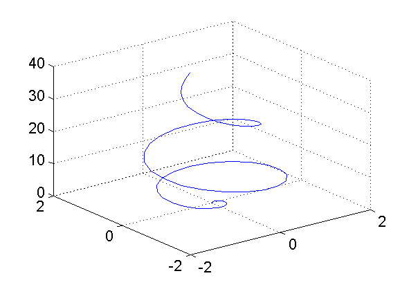
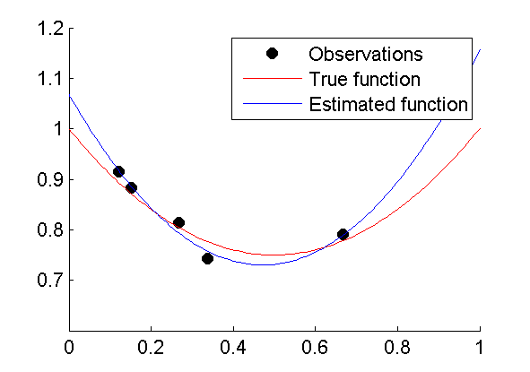

Computational Aspects of Econometrics and OR: MATLAB
Table of Contents
1 Overview Matlab part of the course
This document belongs to the course Computational Aspects in Econometrics and OR, and specifically the Matlab part of the course. For more information about the course see Blackboard.
Note that a university student licencse is available that allows you to install Matlab on your PC/laptop. For instructions, see here.
1.1 Prerequisites
I expect that you are familiar with the Matlab basics:
- basic array operations (vector/matrix)
- creating, accessing elements, the
endindex, colon-operator, deleting columns/rows
- creating, accessing elements, the
- mathematical operations
- creating m-files
- script m-files
- function m-files
- programming
if,for,while,break,continue,switch- logical operators:
~,<=,&,|, etc.
- basic plotting
- important Matlab functions
eye,ones,zeros,diag,size,length,find,min,max,sum,sort,any,all,diff,repmat, etc.
If you lack this basic Matlab knowledge, then you should try to learn it as soon as possible. There are many introductory books and tutorial websites you can choose from. Here is a short selection:
- The official "Getting Started with Matlab", which you can also access through the Matlab help function
- Amos Gilat (2011). MATLAB: An Introduction with Applications, SI Version, 4th Edition
- Matlab tutorials on the web
1.2 Learning goals
1.2.1 Know … (theory: by heart, also on paper)
- how to apply the Matlab basics (see prerequisites)
- how to create efficient code by preallocating memory and preventing
unnecessary loops by vectorizing computations, logical indexing and
using functions such as
find,reshape,permute,min,max,sort,all,any - basics of anonymous functions
- the (dis)advantages of cell/structure arrays
1.2.2 Be able to use some advanced Matlab tools and techniques in practice (assignment)
- Matlab tools
- cell and structure arrays
- anonymous functions
- function declarations with variable number of input arguments and
default input arguments (
varargin,nargin) - import and export data in different formats (e.g. TXT, CSV, MAT files)
- advanced figure properties (labels, legends, colors, line styles, etc.)
- 3D-figures (
surf,meshgrid, etc.)
- Techniques
- use the help function to search for built-in functionality and use it (I deliberately give exercises during class and in the assignment for which the solution tool/technique has not been (fully) explained)
- use the profiler
- use the debugger
- appropriate documentation of Matlab code
- split a problem into smaller pieces and write generic functions for them
1.3 Assignment
The assignment will be announced on Blackboard.
- Work in groups (size to be determined)
- Several small exercises
- Requirements
- Efficient (preallocation, vectorize, etc.)
- Well-documented
- Basic function description
- Explanation of input/output parameters
- Comments on long or nontrivial parts of body
- Generic/flexible: write small generic functions to generalizable or repetitive subproblems instead of one large and inflexible program.
1.4 Exam
See Learning goals (the "know" part)
1.5 Course material
Online document—the document you are reading now—containing several topics. For each topic we give
- a short introduction and/or some quick illustrations to get the main idea
- references to the official Matlab documentation, which you can also access by using the Matlab help function, and/or other external online information
- the website YAGTOM is a particularly useful reference for the stuff we are interested in
- exercise(s)
Note that you can easily copy the code snippets in this document and paste them in the Matlab command window, unless it is a function definition for which you'll need to create a m-file.
1.6 Course setup
The Matlab classes have the following setup.
- Short introduction to topic
- Hands on: solve exercises
- Recapture: discuss main issues
- Selected hints and/or solutions are published on blackboard after lecture.
As a preparation for the classes, you are asked to read the documentation and examples provided in this document. This will give you a head start during class, because you can start working on the exercises immediately. The number of exercises is probably larger than you can solve during class. Therefore, some exercises will be marked as bonus exercises, which are certainly useful but not crucial to get the main points across.
After the classes, you can still work on the excises you could not finish. You can ask questions about the exercises next class, or on the Discussion board on Blackboard.
1.7 How to make the exercises?
This section gives you a few general tips about how to make the exercises, or rather how you should do Matlab coding in general. If you already have some experience with Matlab, then you might have picked up a few bad habits as well.
There are several ways to work with Matlab:
- You can write script m-files and run them from the command line or directly from the editor.
- You can write function m-files and run them from the command line or call them in a script.
- You can type commands on the command line.
- You can write script m-files and run so-called sections, marked by
lines starting with
%%, from the editor. - You can write script m-files and copy and paste selections to the command line.
To make things more complicated, you can combine all of the above in no particular order. This also means that results could depend heavily on the workspace at the time you execute that particular piece of code.
It is obvious that this gives you a lot of flexibility, but can also lead to unstructured results, which may be difficult to replicate as well. Methods 3, 4, and 5 are okay for developing small pieces of code, but if you use them too much, you will get confused, and so will anybody that wants to help you. So, you should always save the entire solution to a problem in a script or function m-file.
So, here is list of useful tips.
- Save all your Matlab files in a dedicated folder on your network
drive or memory stick. Change the current working directory to
this folder using the
cdcommand or the user interface. Do not save files on the C-drive or D-drive in the computer lab rooms; you will lose your work. - Write a separate script or function m-file for each exercise. Make
sure to start your script with the
clearstatement to make sure that the script starts in an empty workspace, unless your "logic" depends on repeating the same script more than once—usually it should not. - Try to prevent hard coding and use variables to capture problem data—initialize these variables at the start of the script. Writing functions instead of scripts will allow you to modify problem data in a more flexible way.
- If you write a function, then it might be a good idea to write an accompanying script file testing the function, or calling the function in such a way that it produces the results you want.
- If you came up with clever idea, and want to be sure that you recall how it works tomorrow, then add comments to your code.
Later, in this section you will get some more information about structuring and documenting your code.
2 Efficient coding
2.1 Introduction
One of the most important things that I want you to take away from this course is that you'll produce efficient Matlab code. By this I mean that I don't want to see code for which there is an obvious better solution. Compared to many other programming languages (such as C++, Java, Delphi, etc.) Matlab often requires a different way of thinking. Many complex tasks can be performed in a few lines of code where other languages need many more. Besides being shorter, usually this concise solution performs much faster than the alternative solution, which can used in Matlab as well.
Let's give an example. Suppose that we have a matrix A, say A =
rand(10000,1000), and we want to divide all numbers larger than 0.5
by 2. The straightforward approach, used in many other programming
languages, would be the following:
[m,n] = size(A); for i=1:m for j=1:n if A(i,j)>0.5 A(i,j) = A(i,j)/2; end end end
This solution gets the job done, and if you are not really interested in the performance of this piece of code (because you don't have to perform it many times and/or for large matrices), then there is not much of a problem. However, you don't always know under what circumstances your code will be used in the future. Therefore, it would be nice if you pick up the habit of automatically coding such as problem as follows:
i = A>0.5; A(i) = A(i)/2;
This solution doesn't only perform much faster in Matlab, it has the additional advantage that it also works for numerical arrays with dimensions unequal to two.
The continuous awareness that you should try to develop is "How can I prevent the use of loops?"
In this block we will look at tools and techniques that you can use to make your Matlab code more efficient and in particular to prevent loops.
2.2 Preallocation
If you are going to use loops anyway, then make sure that you preallocate memory for output arrays. Adding new elements/rows etc. to an existing array is very time consuming.
N = 1e6; tic x = 0; for k = 2:N x(k) = x(k-1) + 5; % expand the existing array end bad = toc tic y = zeros(1, N); % preallocate the output for k = 2:N y(k) = y(k-1) + 5; end good = toc
Output
bad =
0.2769
good =
0.0174
Here we used the commands tic and toc to measure the time elapsed
between the two statements.
2.3 Element-wise Arithmetic
Try to operate on multi-dimensional arrays as much as possible. Basic
mathematical functions such as sin, exp, log can be applied to
multi-dimensional arrays. A bit less familiar, but a great tool to
get rid of loops, are the basic arithmetic operators .*, ./, .^,
that operate on arrays of the same dimension (or scalars). For
instance:
A = A./B; B = B.^2;
to divide every element in the matrix A by the corresponding element
in B and square the elements in the matrix B. Note that the
latter is different from B^2, which is the matrix product of B
with itself.
2.4 Useful functions
There is quite a number of built-in functions that prevent the usage of loops. Here is a list with a short description and/or example. Probably, you already know some of these commands. Make sure that you are also familiar with the optional extra input and output arguments, which can often be very useful.
- sum
sum(A,2)sums along the second dimension, i.e., over the columns, of the matrixA. For example:
A = reshape(1:24, 4, 6)
a1 = sum(A, 1)
a2 = sum(A, 2)
With output
A =
1 5 9 13 17 21
2 6 10 14 18 22
3 7 11 15 19 23
4 8 12 16 20 24
a1 =
10 26 42 58 74 90
a2 =
66
72
78
84
- mean,std,var
- calculate the mean along a particular dimension of
an array. For the
stdandvarfunctions, the third input argument refers to the dimenion—and the second denotes wheter you want the population (1) or sample (0/default) standard deviation or variance. - min,max
- Compute the min/max along a particular dimension (third input argument). Indices of min/max-locations are returned in the second output argument.
A = rand(4, 6) [m1, i1] = min(A, [], 1) [m2, i2] = min(A, [], 2)
Output:
A =
0.0540 0.1299 0.3371 0.5285 0.6541 0.0838
0.5308 0.5688 0.1622 0.1656 0.6892 0.2290
0.7792 0.4694 0.7943 0.6020 0.7482 0.9133
0.9340 0.0119 0.3112 0.2630 0.4505 0.1524
m1 =
0.0540 0.0119 0.1622 0.1656 0.4505 0.0838
i1 =
1 4 2 2 4 1
m2 =
0.0540
0.1622
0.4694
0.0119
i2 =
1
3
2
2
- sort
- similar to min/max, but dimension is the second input argument
- cumsum,cumprod
- cumulative sum (prod)
- find
- returns the indices of nonzero elements. Useful in
combination with logical tests:
i = find(A>1 & A<2) - all, any
- test whether all entries (any entry) in a particular dimension of an array are (is) nonzero.
A = [1 1 1
0 1 0
0 0 0];
rows = [all(A); any(A)]
cols = [all(A,2), any(A,2)]
Output
rows =
0 0 0
1 1 1
cols =
1 1
0 1
0 0
- diff
- calculate the difference of the elements of an array. For
instance,
diff([1 2 5 8 15])yields[1 3 3 7]. The (optional) second and third input arguments can be used to control the order of the difference and the dimension that should be used. A not so obvious practice of thedifffunction, but very useful, is locating the positions in a vector where the value changes.
x = [10 10 10 20 20 20 20 30 30 40 40 40]
d = diff(x)
i = [find(d), length(x)] % always include the last entry
y = x(i)
Output:
d =
0 0 10 0 0 0 10 0 10 0 0
i =
3 7 9 12
y =
10 20 30 40
2.5 Logical indexing
In the introductory example, we have already seen the use of logical
indexing. The statement i = A>0.5 returns a logical (0/1 or
false/true) array of the same dimension as A indicating whether or
not the entry is larger than 0.5. Next, A(i) simply returns those
entries. If necessary, find(i) can be used the get the
corresponding indices, but often this is not needed.
2.6 Linear indexing
Internally, Matlab stores a numerical array, regardless of its dimension and size, as a 1-dimensional vector. Hence, the 3x4 matrix in the following example is actually stored as a vector of size 12. This explains the results of the following Matlab statements.
A = [11 12 13 14
21 22 23 24
31 32 33 34]
i = find(mod(A,11) == 0) % find indices of multiples of 11
x = A(i)
Output:
A =
11 12 13 14
21 22 23 24
31 32 33 34
i =
1
5
9
x =
11
22
33
The vector i is a linear index into the matrix A. Linear indices
can be translated in the corresponding regular multi-dimensional
indices and vice versa by the functions ind2sub and sub2ind,
respectively. See the Matlab help function for more details of these
functions. For example:
>> [row,col] = ind2sub([3 4],i')
row =
1 2 3
col =
1 2 3
2.7 Matrix creation and transformation
You should already be aware of functions like ones, zeros, eyes,
diag, tril, triu to create basic arrays of desired size. By
adding functions as repmat, reshape and permute a whole new
window of opportunities opens.
2.7.1 Example: juggling with matrices
Given a vector \(x \in \mathbb{R}^{MN}\). Create a \(Mm \times Nn\) matrix with \(M \times N\) submatrices of size \(m \times n\) with the elements in \(x\).
Let x = [1 2 3 4 5 6] and \(m=3,n=2,M=2,N=3\). Hence, we need to
produce the matrix
x =
1 1 2 2 3 3
1 1 2 2 3 3
1 1 2 2 3 3
4 4 5 5 6 6
4 4 5 5 6 6
4 4 5 5 6 6
One way to solve this problem is to use the Kronecker product:
kron(reshape(1:6,3,2), ones(2,3))'
This solution is sufficient for most purposes, but you have to keep in
mind that kron actually needs to do \(MNmn\) multiplications. Hence,
if the sizes become larger and the computation has to be repeated
several times, then this solution is not so efficient. Even though
kron does not use loops, it is not necessary to perform the
multiplications.
We can solve this exercise in an efficient way without using loops by juggling around with matrices. Perhaps it is not straightforward to get this solution, but it gives a good idea of what these functions can do.
>> x = repmat(1:6,6,1)
x =
1 2 3 4 5 6
1 2 3 4 5 6
1 2 3 4 5 6
1 2 3 4 5 6
1 2 3 4 5 6
1 2 3 4 5 6
>> x = reshape(x, [3 2 3 2]) % convert to 4-dimensional array
x(:,:,1,1) =
1 1
1 1
1 1
x(:,:,2,1) =
2 2
2 2
2 2
x(:,:,3,1) =
3 3
3 3
3 3
x(:,:,1,2) =
4 4
4 4
4 4
x(:,:,2,2) =
5 5
5 5
5 5
x(:,:,3,2) =
6 6
6 6
6 6
>> x = permute(x,[1 4 2 3]) % move the 4th dimension in front of the 2nd and 3rd
% x(i,l,j,k) <--- x(i,j,k,l)
x(:,:,1,1) =
1 4
1 4
1 4
x(:,:,2,1) =
1 4
1 4
1 4
x(:,:,1,2) =
2 5
2 5
2 5
x(:,:,2,2) =
2 5
2 5
2 5
x(:,:,1,3) =
3 6
3 6
3 6
x(:,:,2,3) =
3 6
3 6
3 6
>> x = reshape(x, [6 6]) % convert to 6x6 matrix
x =
1 1 2 2 3 3
1 1 2 2 3 3
1 1 2 2 3 3
4 4 5 5 6 6
4 4 5 5 6 6
4 4 5 5 6 6
One way to understand what is going on here is to apply the same
operations to the linear indices corresponding to the 6x6 matrix we
started with. The linear indices show where the entries end up in the
final result. For instance, the indices [1 2 3 4 5 6] correspond to
the first column of the first matrix x with all ones.
>> k = reshape(1:36, [6, 6])
k =
1 7 13 19 25 31
2 8 14 20 26 32
3 9 15 21 27 33
4 10 16 22 28 34
5 11 17 23 29 35
6 12 18 24 30 36
>> k = reshape(k, [3 2 3 2])
k(:,:,1,1) =
1 4
2 5
3 6
k(:,:,2,1) =
7 10
8 11
9 12
k(:,:,3,1) =
13 16
14 17
15 18
k(:,:,1,2) =
19 22
20 23
21 24
k(:,:,2,2) =
25 28
26 29
27 30
k(:,:,3,2) =
31 34
32 35
33 36
>> k = permute(k, [1 4 2 3])
k(:,:,1,1) =
1 19
2 20
3 21
k(:,:,2,1) =
4 22
5 23
6 24
k(:,:,1,2) =
7 25
8 26
9 27
k(:,:,2,2) =
10 28
11 29
12 30
k(:,:,1,3) =
13 31
14 32
15 33
k(:,:,2,3) =
16 34
17 35
18 36
>> k = reshape(k, [6, 6])
k =
1 4 7 10 13 16
2 5 8 11 14 17
3 6 9 12 15 18
19 22 25 28 31 34
20 23 26 29 32 35
21 24 27 30 33 36
2.8 Memory usage: operating in blocks
As you should now by now, we prefer to operate on arrays (matrices, vectors) as a whole, because this is usually faster than operating on individual entries inside a loop. Unfortunately, sometimes you want to do so many repetitions or your data set is so large, that Matlab experiences memory problems. You may observe that the computation speed slows down, because Matlab has to read and write data to disk instead of using the internal memory of your computer. In some cases, the memory that you require may be simply too much and Matlab returns an error.
This does not necessarily mean that you have to revert to doing scalar operations instead. A more sophisticated method is to use a loop and operate on a large block of your data set. In this way, you still have the advantage of working on large arrays, and you can bypass the memory problem.
You can practice this idea in one of the exercises.
2.9 Profiling
If you are really interested in optimizing your code, then Matlab's profiler is a very useful tool. It presents you an overview of how many times a specific function or line of code was executed and how many time was spent there. This gives you a good indication where you should try to improve your code. The profiler can easily be activated from the Matlab Editor interface using the button Run and Time.
2.10 Debugging
More important than the efficiency of your code is of course that the code does what it should do. If it doesn't, then you should debug your code. You can do this by looking at your code and try to spot the bug, but sometimes it is more convenient to use Matlab's debugging tools. In that way you can go over the execution of your code step by step. Often that can give you ideas about improving the efficiency of your code as well.
The debugger can also be easily accessed from the Matlab Editor interface. You can set a breakpoint on any line in your code by pressing F12. If you run the code, the execution halts at this line. After that you get the option to execute the code line by line, either bypassing function calls or diving into the function calls on a particular line.
2.11 Final remarks
The tools we have discussed in this block enable a Matlab programmer to write very powerful programs with a few lines of code. The danger exists that this code becomes difficult to read, even to the programmer himself. Therefore, it is the programmer's responsibility to add appropriate comments to the code if necessary.
It's up to you to find the right balance between producing efficient code on the one hand, and having an efficient coding process on the other hand. It doesn't make sense to spend one hour optimizing your code, if you're applying it only once on a small or medium sized data set. However, it would be nice if you are able to optimize your code if necessary. If you try to change your way of thinking is this respect, it often goes automatically in practice. Hence, avoid loops as much as you can anywhere during this course (and forever after!). During the exam, some of your abilities in this respect will be tested!
Very useful functions to prevent the use of loops, but outside the
scope of our course, are arrayfun, cellfun and bsxfun. If you
really need to address speed issues of your Matlab code, then have a
look at these functions. See the Matlab help and Yagtom.
2.12 Exercises
2.12.1 Student grades
Define a three-dimensional array using the statements
n = [4 2 10]
A = 10*rand(n)
Perform the following tasks without using loops.
- Suppose that the entries in the matrix represent grades. Round the grades to halves. The only exception is that the grade 5.5 is not allowed; these grades have to be rounded to 5 or 6.
- Create a matrix B with three columns for which the rows represent
the indices into the matrix A that correspond to sufficient grades
(>=6). Hence, if
A(2,1,5)is greater or equal to 6, then[2 1 5]is one of the rows ofB. - The matrix contains the grades for 10 students who each did 2
assignments of 4 questions each. Calculate the students' overall
grades, which is determined by the arithmetic mean of the in total
8 questions. Did you use the
meanfunction once or twice? Try using it only once.
2.12.2 Euclidean distance
Let the rows of the \(m \times n\) matrix \(X\) represent \(m\) vectors in $n$-dimensional space. We want to create a \(m \times m\) matrix \(D\) such that \(D_{ij}=\|x_i-x_j\|_2\), i.e., the Euclidean distance (2-norm) between the ith and jth row of \(X\). We want to write a function for this purpose.
- Implement the "standard" approach using two loops to generate all combinations of vectors \(i\) and \(j\).
- The final step is to make an even more efficient implementation by
using only a single loop. Pick a vector \(i\) and calculate its
distance to all the other vectors \(j\; (j>i)\) (use
repmatfor that). Finally, note that the distance matrix is symmetric. - Write a script file that tests the performance of your two
implementations on a random matrix of size \(1000 \times 10\). Use
ticandtocto time the methods.
2.12.3 Find the bug
In this exercise you'll have to find an error in a function. It is not a syntax error, but a logical error, which might lead to errors or simply returns an unintended answer. If you can't find such an error right away, then a good alternative is to use the Debugger. Walk through the function step by step and examine intermediate output.
Save the file rebalance.m on your Matlab path. This function is supposed to convert a time series, represented by a vector, such that it does no longer contain negative entries. It does so by transfering negative entries backwards in time, such that the sum of entries does not change (unless there is a negative entry in period 1). For instance, if \(x=(4,-2,1)\), then the negative entry in period two can be combined with the 4 in the first period. This yields the corrected series \(\tilde{x}=(2,0,1)\). If the function works correctly, it should give the output shown in the example below.
>> y = rebalance([2 4 -2 3 2 -4 5])
y =
2 2 0 1 0 0 5
>> y = rebalance([2 4 -2 3 2 -4 -1])
y =
2 2 0 0 0 0 0
>> y = rebalance([-2 4 -2 3 2 -4 5])
y =
0 2 0 1 0 0 5
Unfortunately, the function does not always return the correct output (see the second and third examples above). Find and correct the bug(s)!
2.12.4 Square form
Consider the square form \(x^TAx\) with \(x \in \mathbb{R}^n\) and \(A\in \mathbb{R}^{n \times n}\). Suppose that we want to evaluate this expression for all vectors in the rows of the \(m \times n\) matrix \(X\). The standard solution with loops is as follows:
[m,n] = size(X); y = zeros(m,1); for i=1:m y(i) = X(i,:)*A*X(i,:)'; end
- Can you find a method that does not require a loop? Hint: look for a combination of a (regular) matrix product and a elementwise-product of matrices.
- Generate random matrices \(X\) and \(A\) for \(n=40\), \(m=1000\). Test
the performance of the two approaches by replicating the
computations, say 1000 times, by putting them in a loop and time
the duration using
ticandtoc. - Also compare the performance of the two methods using the profiler.
2.12.5 Run length decoding
Reconsider the example about the diff function. Extend the use of
the diff function even further by writing a function that also
counts the number of subsequent equal values. For a given input
vector x, the function should return two outputs: a vector y (as
in the example) and a vector c that counts the number of
subsequential values in x. For the particular example this would be
y = [10 20 30 40] and c = [3 4 2 3].
2.12.6 Random experiment: operating in blocks
Consider the following experiment. We have a group of \(n\) people numbered from 1 to \(n\). They are put in a random sequence and we are interested in the number of occurrences where two people with consecutive numbers are side by side. For instance, if person number 5 is followed by person number 6, then we have a hit. However, if these two persons are in the opposite order, then it does not count. If we have three consecutive numbers in line, then this should count as two.
- Create a function that takes the size of the group and the number
of experiment replications as inputs, and then performs the
experiment and returns the fraction of consecutive numbers in the
generated sequences. Matlab has a function
randperm, however, this function can generate random permutations only one by one. We want to generate them all at once. You could do this by usingrandin combination with (the second output argument) ofsort. You should not use a loop in your function. - Test your function and try different values for the number of replications. Try to find the number where Matlab slows down due to memory problems.
- Make a new implementation of your function in such a way that it can generate and operate blocks of permutations. For instance, instead of doing 1 billion permutations in one go, you'll do 1000 blocks of 1 million permutations.
- Try to compare the performance differences with respect to the speed for several block sizes when working with a large number of replications. You might want to use the profiler.
- Bonus question: add another input argument to your function that indicates the required number of consecutive numbers in the line. In the standard case this was two, but it could be three or any other number.
3 Cell and structure arrays
3.1 Cells
The most used data type in Matlab is without any doubt the double, which is a data type that represents numerical numbers. Multi-dimensional arrays allow us to represent vectors, matrices and even higher dimensional data. Regardless of the dimension and size of such an array, each and every entry in such an array is always a single double. Cell arrays are similar in most aspects, but each entry of a cell array can be any other Matlab data type, e.g., a matrix, a string, a double, a structure array or even another cell array. This is especially convenient if you want to store data that somehow belongs together and has different formats and sizes.
Look at this quick introduction about cell arrays. You can stop
reading when they start talking about cellfun. Although this is a
very useful function, especially in combination with function handles,
and I encourage the use of it, we don't deal with it in this course.
If you need more information about cell arrays look at the Matlab documentation on the web here, or even better, access the Matlab help function.
3.2 Structures
Structures arrays are an alternative way to store data of different types and size in a single entity. You might know structures from other programming languages, such as Java and c++, and they are very similar in Matlab, however, we don't consider objects as in object oriented programming, just regular Matlab data types.
Read the introduction about structures, and structure arrays, on Yagtom. For more detailed information, again look at the official Matlab documentation.
3.2.1 Example: passing multiple arguments to a function
One of the nice possibilities of structs is to pass multiple input arguments to a function. This is specially useful for large projects.
Suppose that you have a set of functions that share a large set of parameters:
function y = main(x,rho,lambda,mu,sigma,A,b) y = subfun(x,rho,lambda,mu,sigma,A,b);
function y = subfun(x,rho,lambda,mu,sigma,A,b) y = x + rho/lambda + mu*sigma + A'*A*b;
Now suppose that somewhere in the code you call the function by
main(x,mu,sigma,rho,lambda,A,b). This doesn't give you an error
message, but the result is probably not as intended and it will be
difficult to spot this bug.
Moreover, suppose that we need to extend the computation in subfun
and that an additional input argument is needed. Then, we'll need to
change the function main and all functions that call main and
subfun as well.
We can resolve these inconveniences by using structs:
function y = main(x, pars) y = subfun(x, pars);
function y = subfun(x, pars) % Extract parameters from struct. This step is not really necessary, % because we can use the values directly as well. rho = pars.rho; lambda = pars.lambda; mu = pars.mu; sigma = pars.sigma; A = pars.A; b = pars.b; y = x + rho/lambda + mu*sigma + A'*A*b;
3.3 Exercises
3.3.1 Reading from a text file
In this exercise we are also going to practice some data import and
export tools. Note that if you are importing/exporting only numerical
data, then dlmread and dlmwrite are convenient functions. Here we
have mixed numerical and text data, which is a bit more complicated.
- Download the file datelist.csv and have a look at it.
- Import the data in Matlab. You can use any method you like, for
instance the import wizard (
uiimport) or thetextscancommand. Skip the header line. From the data now create the numerical vectorsyear,day, andweek, and cell arraysmonthandweekday. If you really get stuck here, then download the Matlab data file datelist.mat and load it in your Matlab session. - Create a 9x2 cell array
C. For every year (there are 9 different years) in the data set put the year number (i.e., a scalar value) in the first "column". The second "column" should be filled by two-column matrices containing the day and week numbers of the corresponding year in the data set. - Create a 12x1 structure array with the fields: month, day, weekday and year. Of course, the month field only needs to contain a single string (character array). You might need to search for a built-in Matlab function that you can use to compare strings (character arrays) and cells.
- Check if there are any duplicate dates in the data set. Note that the combination (year,day,week) should be unique for any date, so you don't need to consider any of the text data. Try not to use a loop for locating the duplicates.
- Write the duplicate dates to a comma-separated-values (CSV) file
with a structure exactly similar to the original. Also include
the header line. Take a look at the functions
fopen,fprintfandfclose.
3.3.2 Combinations totaling to sum
Consider natural numbers \(n\) and \(k\). We are interested in creating all possible combinations of \(k\) numbers summing to \(n\). For example, if \(n=4\) and \(k=3\), then these combinations are
0 0 4 0 1 3 0 2 2 0 3 1 0 4 0 1 0 3 1 1 2 1 2 1 1 3 0 2 0 2 2 1 1 2 2 0 3 0 1 3 1 0 4 0 0
For fixed \(k\) a straightforward solution comes to mind involving \(k\) loops. The problem, however, is that \(k\) and hence the number of loops is unknown beforehand. This problem could be solved by recursion, but still that solution uses a lot of loops.
A very elegant solution to this problem, which illustrates the possibilities to do things without loops, is given by the following function. It is instructive to walk through the steps of this function using the debugger.
function c = combsum(n,k) % COMBSUM All combinations of natural numbers totaling to sum % % c = combsum(n,k) % % Returns all possible combinations of K numbers totalling to N in the % rows of the output matrix C. % We consider n+k-1 items: n ones and k-1 "dividers". The dividers partition % the n numbers in k subsets. % % Suppose n=4, k=3. Then one of the combinations produced by nchoosek is % [2 5]. This places dividers at position 2 and 5: % % [ 1 2 3 4 5 6 % 1 * 1 1 * 1 ] % % which partitions the ones in three parts yielding the combination [1 2 1]. % % This combination can be obtained taking the diff of [0 [2 5] 7] and % subtracting one. dividers = nchoosek(1:(n+k-1), k-1); % produce all combinations nDividers = size(dividers, 1); % Add dividers at the beginning and end. b = [zeros(nDividers, 1), dividers, (n+k)*ones(nDividers, 1)]; % Find distances between dividers. c = diff(b, 1, 2) - 1;
In this exercise, we make another implementation of the function
combsum by using cell arrays.
- Initialize an empty cell array
xof size \(1 \times k\). - Use the
ndgridfunction to create \(k\) multi-dimensional arrays (tensors) of size \((n+1)^{k}\) (with values \(0\) to \(n\)) into the cell array that you just created. The left-hand side of this assignment should be[x{:}], which is the same as[x{1},x{2},...,x{end}]. This puts the \(k\) outputs ofndgridin the \(k\) cells of cell arrayx. - Now reshape the contents of each cell to a vector and put them in a
matrix
Awith \(k\) columns (you may use a loop for this). This matrixAcontains all possible combinations of \(k\) numbers with values from \(0\) to \(n\). - If you now delete all rows that do not add up to \(n\), then you are done.
- Test the intermediate steps of the approach with small values for
\(n\) and \(k\), so that you understand what is going on, and finally
write the new implementation of
combsum.
4 Function handles & anonymous functions
4.1 Introduction
You should already be familiar with the concept of m-file functions, because it's the standard way to define a function in Matlab. M-file functions allow you to divide your computations in independent pieces of code, which can be called whenever you like. However, it is a bit annoying when you have to create a m-file function for a one line function definition. Sometimes this is necessary though, for example when you have to define the objective function of an optimization problem, because the optimization tool requires this as an input. This is where function handles and anonymous functions are extremely convenient as we shall see.
4.2 Function handles
A function handle is nothing more than a reference to another function. This is a simple example how to create and use a reference to a built-in Matlab function.
f = @sin; % reference to the sin function x = f(pi*(0:0.5:2)) % evaluate sin through the function handle f
x =
0 1.0000 0.0000 -1.0000 -0.0000
This also works for multiple input and output arguments.
g = @min;
A = [1 2
4 3];
[x,i] = g(A,[],2) % find row minimum (traverse along 2nd dimension)
x =
1
3
i =
1
2
4.3 Anonymous functions
An anonymous function is a special type of function handle to a function for which no m-file function exists. You can see it as an alternative to inline functions. Actually, anonymous functions are much more flexible and faster than inline functions, so use anonymous functions from now on.
Here is a simple example of an anonymous function:
f = @(x) poisspdf(x, 5)
This statement defines a function handle f to a function of one
variable x, which is defined by poisspdf(x,5). Hence, f(2)
would return the same output as poisspdf(2,5), which is the
probability that a Poisson distributed random variable with mean 5 is
equal to 2. Note that the variable x, which is used in the
definition of the anonymous function has no effect on a variable with
the same name in the current workspace.
We can also define functions with multiple input arguments and use variables from the workspace in the definition.
a = 1; c = 2; f = @(x,a) a.*(x-c).^2;
Note that we are using element-wise arithmetic operators in the
definition. This allows us to call the function with non-scalar
inputs (as long as they match in size of course). Another important
thing to remember is that changing the value of c has no effect on
the definition of f: only the value of c at the time of the
definition is relevant! On the other hand, the value of a in the
workspace has no effect at all on the function f where a is only
used as a (temporary) reference to the second input argument of f.
These notions explain the results of the following commands.
t = [4 4 5 5]; b = [1 2 1 2]; y = f(t,b); a = 100; c = 100; y = [y; f(t,b)]
Changing the variables a and c has no effect on the output as you
can see:
y =
4 8 9 18
4 8 9 18
4.4 Illustrative example
Now that we have seen how to define anonymous functions, let's have a look at some examples where anonymous functions are very useful. We can use them
- to pass a function to another function,
- to capture data values for later use by a function,
- to call functions outside of their normal scope.
A useful Matlab function is the fzero function, which you can use
to find the zero location of a function of a scalar variable. For
instance:
>> fzero(@log, 2)
ans =
1
@log is a function handle of the function for which we want to find
the root and the second argument is an initial guess of the
location of the root.
Often, you don't want to find the location where a function is equal
to zero, but the location where it is equal to a certain value c,
which is not necessarily equal to zero. What to do if we want to find
the location where the gamma function is equal to 10? Without
anonymous functions, we would have to define an m-file function that,
for a given input x, returns gamma(x)-10, and use that function as
the input for fzero. We would have to repeat this procedure for
other targets than 10. Of course, we can easily define a function
with a second input argument that represents the target, but fzero
requires a function with only one input variable.
This problem is easily solved with anonymous functions:
f = @(x) gamma(x)-10;
x = fzero(f, 2)
We can even do it in one line:
x = fzero(@(x) gamma(x)-10, 2)
We can take this idea even one step further by defining a function
that generalizes the fzero function to include an input variable
that represents the target. Consider the m-file function
function x = ftarget(f, target, x0) g = @(x)(f(x) - target); x = fzero(g, x0);
Now we can do
>> [ftarget(@log, 1, 2), ftarget(@gamma, 120, 3), ftarget(@normcdf, 0.975, 3)]
ans =
2.7183 6.0000 1.9600
Note that we could have obtained the same results from the following anonymous function instead of the m-file function above.
ftarget = @(fun, target, x0) fzero(@(x) fun(x)-target, x0)
4.5 Exercises
4.5.1 Piecewise function
Define the following function as an anonymous function. Make sure
that the function allows non-scalar input. Note that you can't use
if statements or loops in the definition of an anonymous function.
Plot the function using fplot.
4.5.2 Expected value
Let \(X\) be a gamma distributed random variable with shape parameter 5
and scale parameter 2. Write an anonymous function Efx that returns
\(E[f(X)]\) for a function \(f(.)\). For instance, \(E[\log(X)]\) can be
calculated by Efx(@log). You'll need to find a (built-in) function
you can use to evaluate an integral. Use your version of Efx to
calculate
- \(E[\log(X)]\)
- \(E[1/X]\)
- \(E[\cos(X)]\)
- \(E[(X-10)^2]\) Note that this should return the variance of \(X\): 20.
4.5.3 Solving nonlinear equations
In this exercise we will try to solve a system of nonlinear equations. Note that we will discuss linear equations in the section about Linear algebra.
Make an anonymous function for \(f:\mathbb{R}^n \rightarrow \mathbb{R}^n\) with \(n\) an even natural number and
\begin{equation*} f(x) = \begin{bmatrix} g(x) \\ h(x) \end{bmatrix}, \end{equation*}with
\begin{equation*} g_i(x) = 1 - x_{2i-1}, \qquad i=1,\dots,n/2 \end{equation*}and
\begin{equation*} h_i(x) = 10(x_{2i-1}-x_{2i})^2, \qquad i=1,\dots,n/2 \end{equation*}
Note that it is not too difficult to do this without having to define
the functions \(g(.)\) and \(h(.)\) first. For instance, the function
\(g(.)\) is easily defined by 1-x(1:2:end-1). Moreover, you can write
a single anonymous function that works for all (even) \(n\).
We are interested in solving the nonlinear system of equations \(f(x)=0\), which has \(n\) equations and \(n\) unknowns. It can easily be verified that the n-dimensional all-one vector is a solution for this problem.
Now try to find this solution numerically using the fsolve function.
Read the documentation about how to use this function. Pick a random
initial guess—i.e., generate it using a random number generator—and
make sure to have the function display some output so that you can
check the number of function evaluations.
Now do the same, but also provide fsolve with the Jacobian (first
derivative) of \(f(.)\). You cannot use an anonymous function for that.
This time you have to write a m-file function to compute the function
\(f\) (first output argument) and its Jacobian (second output argument).
If you run the algorithm again, then you should see that the number of function evaluations is much smaller than in the case without the Jacobian.
5 Generic programming & good documentation
5.1 Introduction
More often than not, Matlab is the number one choice among the tools that I would consider as an alternative to solve a particular problem. One of the things I like about Matlab is that it is so easy to develop advanced algorithms in such a short time. An important reason for this is the possibility to use the many mathematical, statistical and visualization functions that are available right out of the box accompanied with professional documentation and examples. Another advantage is the freedom that the language allows. For instance, contrary to most other programming languages, in Matlab it is not necessary to declare variables and their dimension, size and type before you use them. As a matter of fact, you can change the dimension, size and type of a variable at free will.
It is easy to understand that the last "advantage" can result in ambiguities as well. Combined with the power of this high level programming language this can introduce serious problems. Unfortunately, Matlab makes it very easy to make very powerful code such that even the author cannot understand its meaning after even a week. Needless to say that another person cannot make any sense of it as well.
This block is to give some guidelines how we can prevent this problem.
- Generic programming
- By this I mean that you try to split your problem in smaller subproblems and write separate pieces of code for them. Ideally, the subproblems should be coded in such a way that their applicability goes beyond the use of the particular problem at hand.
- Good documentation
- Add appropriate documentation to your functions and complex pieces of code.
5.2 Generic programming
As explained in the introduction, the idea is to split a problem in smaller subproblems. It is hard to give specific rules here; you will have to find the right balance of the subproblem size. As a guideline you could say that you should consider writing a separate Matlab (sub)function if:
- You are copying pieces of code. For instance, if you want to repeat a certain analysis with minor variations or different data sets, or if you want to produce the same type of plot for different data sets.
- You are writing a rather complex piece of code of more than, say, 10 lines.
If possible, you should try to take the generic programming one step further by trying to anticipate on possible alternative uses of the particular subproblem for which you are writing a Matlab function. You can do this in several different ways as illustrated in the following sections.
5.2.1 Allowing higher dimensional inputs than necessary for your original problem
Suppose that you want to compute the shape and scale parameters of a gamma distribution that correspond to a given mean and standard deviation. Even though it is only two lines of code, this is a typical example of a subproblem that needs to be solved at another time as well. Perhaps, you need to solve it for a multiple combinations of means and standard deviations. Hence, it's convenient if the function allows vector or even higher dimensional input. This can often be accomplished by making the arithmetic element-wise right from the start. Even if you cannot prevent the use of loops in the function, all future caller functions don't have to implement this loop again and again.
5.2.2 Adding additional input arguments that control the behavior of the function
Suppose that you need to compute the 4-period moving average of multiple time series with quarterly data. Because you may need to repeat this computation several times and for different type of time series, it makes sense to write a dedicated Matlab function for it. However, perhaps you need to solve a similar problem in the future for monthly data. You can provide an additional input argument that controls the number of periods for which you want to calculate the moving average.
5.2.3 Providing default values for some input variables
Continuing on the previous example, we can make the additional input
argument optional. Hence, the user is not required to use it, and in
that case the function should provide a default value. This can be
accomplished by the use of the nargin statement, possibly in
combination with isempty. For example:
function y = MovingAverage(x, n) if nargin < 2 || isempty(n) % Default: four period moving average n = 4; end % Start of computations
This allows the user to call the function by MovingAverage(x),
MovingAverage(x,4) as well as MovingAverage(x,12).
By using the varargin construct it is even possible to have a
variable number of input arguments. The varargin construct requires
some basic knowledge of cells.
See the Matlab help and Yagtom for some examples.
5.2.4 Providing additional output
Often your computations produce intermediate or side results. These
results could be useful in some circumstances. Therefore, it doesn't
do any harm to include these results as output variables. Outputs
don't necessarily have to be retrieved by the caller function, hence
if the user doesn't need the results, then there is no waste of
computations or memory. If desired,
it is possible to control the flow inside a function depending on the
required output arguments by using the nargout and possibly even the
varargout constructs.
5.3 Documenting your code
As noted before, it is important to supply your code with appropriate documentation. I distinguish between two different types of documentation.
5.3.1 Function documentation
If you write a function, then you should always include
- a one-line description of the function
- an overview of the input and output variables
- a description of what the function does
It is important that all three parts of the function documentation are
put at the top of your file, directly below the function declaration,
in a contiguous block of lines starting with the comment character
(%) and starting with the one-line description. This entire block
will show up in the Matlab command window when the command help
<FunctionName> is issued. The first line of the documentation is
displayed for each m-file when the help function is given a
directory name as its argument (help <Directoryname>).
The idea is explained in the following example.
function [y, trimmed] = trim_data(x, fraction, tail) % TRIM_DATA Trims the tails of input vector % % y = trim_data(x) % y = trim_data(x, fraction) % y = trim_data(x, fraction, tail) % % For a numerical vector trims away a certain percentage of the lowest % and/or highest observations. % % |----------+-----------------------------------------------------------| % | Input | Description | % |----------+-----------------------------------------------------------| % | x | vector with numerical data | % | fraction | fraction of observations to trim away (default: 0.2) | % | tail | 0: trim away high and low observations (default) | % | | 1: trim away high observations only ... | % | | -1: trim away low observations only | % |----------+-----------------------------------------------------------| % |----------+-----------------------------------------------------------| % | Output | Description | % |----------+-----------------------------------------------------------| % | y | sorted vector with observations that are not trimmed away | % | trimmed | the trimmed observations | % |----------+-----------------------------------------------------------| if nargin < 2 || isempty(fraction) % Default trim 20%. fraction = 0.2; end if nargin < 3 || isempty(tail) % Default trim high and low observations. tail = 0; end if tail == 0 % Convert to one-sided fraction. fraction = fraction / 2; end x = sort(x); n = length(x); % Compute the number of observations to trim per tail. k = floor(fraction * n); switch tail case 1 % Trim high observations. y = x(1:end-k); case -1 % Trim low observations. y = x(k+1:end); otherwise % Trim high and low observations. y = x(k+1:end-k); end % If second output argument required, then return the trimmed values. if nargout > 1 switch tail case 1 trimmed = x(end-k+1:end); case -1 trimmed = x(1:k); otherwise trimmed = x([1:k, end-k+1:end]); end end
5.3.2 Local documentation
You add local documentation, i.e., documentation to the code itself, for several reasons.
- To enhance the understanding of the main flow of the code. This is
the type of documentation that is present in the
trim_datafunction in section about Function documentation. - To explain details about nontrivial parts or lines of code
- To explain the idea behind variables
It is certainly not necessary, or even desirable, to comment on each and every line of code. Note that the necessity of local documentation diminishes if you write relatively small functions, because the function already should contain a proper documentation and the number of different variables is usually limited.
5.3.3 Programming style
Code documentation is supported by a good programming style. The programming style gives rules/guidelines about e.g.
- choosing function/file names,
- choosing variables names,
- indentation of
ifstatements,forandwhileloops, and multi-line statements.
The Matlab editor provides nice support for indentation of code. Choosing variable/function names is specially important for large projects and many different styles and preferences exist. I don't want to add to this discussion.
5.4 Exercise: restructuring code and adding documentation
In this exercise, we consider a script file that is created by copying the commands from the Command Window in a Matlab session to an m-file. During this Matlab session, I wanted to explore the effect of rounding errors on the approximation of derivatives by taking finite differences. For a function \(f\), the central finite difference approximation for \(f'(x_0)\) is given by
\begin{equation*} D_h(x_0) = \frac{f(x_0 + h) - f(x_0 - h)}{ 2h }, \end{equation*}where \(h\) is the step size. For relatively larg step sizes, this approximation is inaccurate because it simply does not capture the curvature at \(x_0\) well enough. On the other hand, very small step sizes could introduce numerical inaccuracies due to rounding errors.
Have a look at the script file roundingerror.m. For the \(\sin\) function and several step sizes I have plotted the errors from the finite difference approximation at \(x_0=0.5\) and its true derivative, which we know is the \(\cos\) function. I also marked the step size with the smallest error in the plot. After that, I repeated this procedure for other values of \(x_0\) and added the results to the same figure.
The example illustrates the ease of experimenting in Matlab. However, the resulting script file is not a very generic and flexible piece of code for several reasons.
- If you want to change the values for \(x_0\), then you'll have to change this at 3 locations in the code. This is what we call hard coding.
- If you want to add another point \(x_0\), then you'll have to copy a piece of the code and change the value for \(x_0\) used there. In addition, you'll have to come up with a different color code to distinguish the plot from the other plots in the figure.
- If you want to do the experiment for another function instead of the sine, then you'll have to change the calls to the sine and cosine everywhere in the code (hard coding again).
Restructure the script file such that these drawbacks are resolved.
Write a function m-file with the following input arguments:
- reference to a function (a function handle)
- reference to a derivative function (also a function handle)
- vector with \(x_0\) locations
- vector with step sizes
and the following output arguments
- matrix with absolute errors corresponding to the \(x_0\) locations (in the columns) and the step sizes (in the rows)
- index locations of step size with minimum error
Make sure that the function has appropriate documention.
- Write a script m-file that uses this function to repeat the original experiment and plots the results nicely in one figure.
6 Linear algebra
6.1 Basic linear algebra in Matlab
Matlab supports many basic linear algebra operations such as
- Creation of special matrices
eye,zeros,diag,toeplitz,hankel,hilb,vander
- Fundamental matrix properties
det,trace,rank,norm,inv
- Matrix factorizations
eig,qr,lu,svd,chol
Special attention is given to the problem of solving a system of linear equations, because in practice people often choose the wrong alternative to solve this problem.
Given \(A \in \mathbb{R}^{m \times n}\) and \(b\in \mathbb{R}^m\), find \(x\in \mathbb{R}^n\) such that \[ Ax=b. \] We can distinguish three cases:
- Square system: \(m=n\)
- Over-determined system: \(m>n\)
- Under-determined system: \(m < n\)
A rule of thumb, regardless of the case, is always use the
backslash operator (\, mldivide):
x = A\b; x = mldivide(A,b); % same as above
The computation is more efficient (faster) than alternative solutions:
- Square system (and nonsingular): equivalent to \(x=A^{-1}b\) (
x = inv(A)*b) - Over-determined system (\(m>n\)): equivalent to least-squares
solution \(x=(A^{T}A)^{-1}A^{T}b\) (
x = inv(A'*A)*A'*b) - Under-determined system (\(m < n\)):
A\bgives a solution with as many zeros as possible. Alternative solutions can be obtained by combining this result with the solution(s) to \(Ax=0\), which can be obtained bynull(A).
6.2 Exercises
6.2.1 Obtaining different solutions to a under-determined linear system
Create a matrix \(A\) and vector \(b\) using the following commands.
m = 6; n = 10; A = randn(m,n); b = randn(m,1);
Verify that the matrix has rank 6, otherwise repeat the procedure. Note that the system \(Ax=b\) is under-determined: infinitely many solutions will exist. Recall from your linear algebra course that any solution to the linear system \(Ax=b\) can be written as \(x = x^0 + y\), where \(x^0\) is an arbitrary solution and \(y\) a homogeneous solution, which is in the null space of \(A\), i.e., \(Ay=0\). In this exercise, you will create three different solutions to the system \(Ax=b\).
- Obtain an arbitrary particular solution \(x^0\) for the linear system \(Ax=b\).
Find the particular solution \(x \in \mathbb{R}^{10}\) for which the first four elements are equal to zero. Note that if the rank of \(A\) is 6, then the null space has dimension 4. Hence, any vector \(y\) in the null space can be written as a linear combination of 4 linearly independent vectors \(v^1,\dots,v^4\) in the null space:
\begin{equation*} y = \sum_{i=1}^4 \alpha_i v^i = V \alpha. \end{equation*}You'll need to find the coefficients \(\alpha_i\) for which the first four entries of the vector
\begin{equation} x = x^0 + y = x^0 + \sum_{i=1}^4 \alpha_i v^i \end{equation}are zero, and you can ignore the other 6 entries of \(x\) and \(y\). Hence, you'll need to find the homogeneous solution \(y\) for which \(y_j=-x^0_j\), for \(j=1,2,3,4\).
- Find the particular solution \(x\) that, among all solutions, has the
smallest 2-norm: \(\lVert x \rVert_2 = \sqrt{x^T x}\). Ideally, you
would like to choose \(x=0\) because its norm is 0, but \(x=0\) is not
a solution to our linear system. Again, a solution is always of
the form \(x=x^0 + y\) with \(y=V\alpha\), where \(V\) is the matrix with
the linear independent vectors from the null space. The ideal
solution \(x=0\) corresponds to \(y=-x^0\) or \(V \alpha = -x^0\). Since
the rank of \(V\) is 4, this system is over-determined and no
solution will exist. The best solution, therefore, comes from
solving the associated least squares problem to this linear system.
Check that this solution is equal to
pinv(A)*b
7 Graphics
7.1 Customizing plots
In this section we'll refresh/introduce some useful graphical commands using examples. First, let's make a data set and plot them.
x = (0:0.1:15)'; % column vector y = [sin(x)./x, exp(-0.05*x).*cos(.5*x)]; % two columns plot(x,y);
After you have created a plot you can use the figure window to edit the figure. For instance, you can add all kinds of labels, change line types and line colors, etc. If you want to use the same type of plot for different parameter values of data sets, then it is convenient to be able to do this type of figure customization automatically using Matlab code. This prevents repeating the customization manually over and over again.
The next example shows the most common graphic customizations.
figure % create a new figure x = 0.1:0.1:7; plot(x, 1./x, 'r--', 'linewidth', 2); % set line color, line style and % line width hold on % add the next plot in the same figure (axes) % With fplot we only have to specify the function and the range instead of % the x-y vectors. fplot(@(x) sin(x)./x, [-7 7], 'b'); grid on % add x- and y- grid lines axis([-7 7 -2 4]); % change visible axis % Change the default location and labels of the x-axis. set(gca, 'xtick', pi*(-2:2)); set(gca, 'xticklabel', {'-2pi', 'pi', '0', 'pi', '2pi'}); % Add some labels title('Example plot'); xlabel('Input'); ylabel('Output'); legend('Hyperbola', 'Damped sine', ... 'Location', 'NorthWest'); % force the location of the legend

The figure/axis/plot properties that you can access through the
figure window can also be changed using Matlab commands. You can
use the commands get and set to retrieve and change these
settings. As the first input argument these functions require a
so-called handle to a figure/axis/plot. The standard functions gcf
(get current figure) and gca (get current axis) return the handles
to the current figure/axis. Try the following commands and check the
results and try to change some setting using the command line.
get(gcf) get(gca) get(gca, 'ygrid'); set(gca, 'ygrid', 'off');
If you want to create multiple figures or plots, then using cell
arrays in combination with sprintf is useful to set labels/legends.
x = (0:0.01:4)'; mu = [0.5, 1, 2]; y = zeros(length(x), length(mu)); leg = cell(1,length(mu)); for n=1:length(mu) y(:,n) = exp(-mu(n)*x); leg{n} = sprintf('\\mu = %.1f', mu(n)); end plot(x, y); legend(leg{:}); % passes the cells as arguments to legend

In the example above, we have used a single plot statement, which is
convenient when you want multiple plots in one figure, because each
plots automatically gets its own color. However, sometimes you build
up a figure by using several plot-like statements. The default plot
color is blue, which means you'll need to specify different colors if
you want the plots to have different colors. You can do this
manually, for instance:
figure; x = -3:0.5:3; % large step size plot(x, sin(x), 'b'); % plot in blue hold on % add new plots to the same figure x = -3:0.05:3; % small step size plot(x, sin(x), 'r'); % plot in red legend('Large step size', 'Small steps');
This is okay if you only have two or three plots, but it not so convenient if you have a more and/or arbitrary number of plots in the same figure. In that case, you can specify RGB colors—color values for red, green, and blue—taken from a so-called colormap. This is illustrated by the following example.
% Define parameter combinations mu_sigma = [ 0, 1 0, 3 1, 0.5 -1, 2 -0.5, 0.8]; n = size(mu_sigma, 1); % number of plots x = linspace(-4, 4, 201); % define the x-range leg = cell(n, 1); % initialize empty legend cell array % Get the RGB-colors from the 'lines' colormap colmap = lines(n); figure; hold on for i=1:n mu = mu_sigma(i, 1); sigma = mu_sigma(i, 2); % Plot using the RGB-colors in the i-th row from the colormap plot(x, normpdf(x, mu, sigma), 'color', colmap(i,:)); leg{i} = sprintf('N(%g, %g)', mu, sigma); end legend(leg{:});
Instead of using the lines colormap, you could also use other
colormaps such as gray, pink, cool, bone, copper.
7.2 3D graphics
Making 3D plots is not much different than creating 2D plots. Let's see some examples.
t = 0:.1:2*pi; x = t.^3.*sin(3*t).*exp(-t); y = t.^3.*cos(3*t).*exp(-t); z = t.^2; plot3(x,y,z); grid on

n = 200;
x = randn(n,1);
y = randn(n,1);
z = randn(n,1);
plot3(x,y,z, '.'); grid on
Things become more interesting if we want to plot a function with two
input arguments as a surface. We need to create a xy-grid first,
which specifies all combinations of x and y values for which we
evaluate the function. The following example illustrates the
meshgrid function.
[x,y] = meshgrid(1:5, [10, 20]) z = x + y
x =
1 2 3 4 5
1 2 3 4 5
y =
10 10 10 10 10
20 20 20 20 20
z =
11 12 13 14 15
21 22 23 24 25
How we can use the meshgrid function to create various 3D plots is
illustrated by the next example.
[x,y] = meshgrid(-3:0.1:3, -2:0.1:2); z = (x.^2 - 2*x) .* exp(-x.^2 - y.^2 - x.*y); figure; % Create the first subplot of a figure with 6 (3x2) subplots subplot(3,2,1); mesh(x,y,z); subplot(3,2,2); surf(x,y,z); subplot(3,2,3); surf(x,y,z); view(-200, 30); subplot(3,2,4); contour(x,y,z); subplot(3,2,5); contour(x,y,z,30); subplot(3,2,6); meshc(x,y,z); colorbar;
Sometimes your two-dimensional function is defined using a single two-dimensional input argument instead of two one-dimensional input arguments. For instance,
f = @(x,y) (x.^2 - 2*x) .* exp(-x.^2 - y.^2 - x.*y);
defines the same function as
g = @(x) (x(:,1).^2 - 2*x(:,1)) .* exp(-x(:,1).^2 - x(:,2).^2 - x(:,1).*x(:,2));
Depending on the situation one could be prefered over the other. In
the last case, it is a bit more complicated to create a 3D-figure,
because the output of meshgrid cannot be directly applied.
Fortunately, it is not too difficult to accomplish:
[x,y] = meshgrid(-3:0.1:3, -2:0.1:2); % generate the grid as before X = [x(:) y(:)]; % put all (x,y) combinations from the grid in % the rows of a two-column matrix z = g(X); % evaluate the function (this will be a % column vector) z = reshape(z, size(x)) % reshape to the same size as x (and y) mesh(x,y,z) % generate the 3D mesh plot
7.3 Exercise: probability distributions
For each of the plots that you make in this exercise make sure that you give different plots a different color or line style and include appropriate titles, axis labels and legends.
- Plot the probability density function (pdf) for the normal distribution with mean \(\mu=1\) and standard deviations \(\sigma = 0.1, 0.5, 1, 2\) in one plot.
- Do the same for the gamma distribution (first derive the shape and scale parameter).
- Plot the pdf of both the normal and gamma distribution (take \(\mu=1\) and \(\sigma=1\)) in one plot.
- Draw 100 random numbers from the \(N(1,1)\) distribution. In one
figure plot
- The cdf of the \(N(1,1)\) distribution
- The empirical cdf of the first 10, 30 and 100 observations,
respectively. You can use
ecdffor this puropose. You can also usecdfplot, but make sure that you give the plots different colors.
8 Regression
8.1 Introduction
Regression using the least squares criterion can be summarized by the following optimization problem
\begin{equation*} \min_{x\in X} \sum_i F_i(x)^2 \end{equation*}We distinguish the following functional forms for the function \(F\).
| \(F(x)\) | Constraints (\(X\)) | Matlab solver |
|---|---|---|
| \(Ax-b\) | None | \, mldivide or regress |
| \(Ax-b\) | \(x \geq 0\) | lsqnonneg |
| \(Ax-b\) | Bound, linear | lsqlin |
| General \(F(x)\) | Bound | lsqnonlin |
| \(F(x, xdata)-ydata\) | Bound | lsqcurvefit |
The first case simply corresponds the the standard linear regression problem, which we discussed in the section about Linear algebra. The second and third type are extensions to this problem where we put a simple nonnegativity restriction on \(x\) or general linear constraints. The last two types correspond to cases where the objective is nonlinear.
8.2 Linear regression
Suppose we have a quadratic function
\begin{equation*} f(x) = \beta_1 x^2 + \beta_2 x + \beta_3 \end{equation*}for which the coefficient \(\beta\) are unknown. Observations are available from the model
\begin{equation*} y_i = f(x_i) + \varepsilon_i \end{equation*}How do we estimate the coefficients from the data? Often students think that they should use one of the nonlinear solvers, because they are dealing with a quadratic model. This is a mistake, because the quadratic function is linear in its coefficients and that's what counts.
We would solve this problem as follows.
%% First create some data to work with beta = [1 -1 1]'; % the true coefficients m = 5; % number of observations sigma = 0.02; % st.dev x = rand(m,1); % the locations of the observations X = [x.^2, x, ones(m,1)] % data/regression matrix y = X*beta + normrnd(0, sigma, m, 1); % the perturbed y-values %% Do the regression and some analysis b = X\y; % estimate beta yhat = X*b; % predictions e = y - yhat; % errors sigmahat = sqrt(e'*e/(m-length(b))); % estimate for sigma % Display results fprintf(1, 'Coefficients (true and estimated)\n'); fprintf(1, '%8g %8.4f\n', [beta, b]'); fprintf(1, '\nStandard deviation (true and estimated)\n'); fprintf(1, '%8g %8.4f\n', [sigma, sigmahat]'); %% Do some visualization fun = @(x,beta) beta(1)*x.^2 + beta(2)*x + beta(3); figure; %plot(x, y, 'k.', 'markersize', 12); scatter(x, y, 'k', 'filled'); hold on fplot(@(x) fun(x,beta), [0 1], 'r'); fplot(@(x) fun(x,b), [0 1], 'b'); legend('Observations', 'True function', 'Estimated function');
Coefficients (true and estimated)
1 1.5244
-1 -1.4362
1 1.0685
Standard deviation (true and estimated)
0.02 0.0176

8.3 Nonlinear regression
Now consider the situation where we have observations from the model
\begin{equation*} y_i = \alpha_1 \exp(\alpha_{2} x_i) + \varepsilon \end{equation*}We want to estimate \(\alpha\) by solving
\begin{equation*} \min_{\alpha} \sum_i (y_{i} - \alpha_{1} e^{\alpha_{2}x_i})^2 \quad\Leftrightarrow\quad \min_{\alpha} \| y - f_x(\alpha) \|^2 \end{equation*}with
\begin{equation*} f_{x}(\alpha) = \begin{bmatrix} \alpha_1 e^{\alpha_2 x_1} \\ \vdots \\ \alpha_1 e^{\alpha_2 x_{m}} \end{bmatrix} \end{equation*}and Jacobian matrix
\begin{equation*} Jf_x(\alpha) = \begin{bmatrix} e^{\alpha_2 x_1} & \alpha_1 x_{1} e^{\alpha_2 x_1} \\ \vdots & \vdots \\ e^{\alpha_2 x_m} & \alpha_1 x_m e^{\alpha_2 x_m} \end{bmatrix} \end{equation*}Note that we consider the function \(f\) as a function with two arguments, but for our purposes we choose \(\alpha\) as its main (first) argument. The Jacobian information can be passed on the Matlab solver, which makes the optimization more efficient. In Matlab we can create a m-file function:
function [f,Jf] = nonlinfun(a,x) % We split the computation, because we can reuse the results in the Jacobian % evaluation. y = exp(a(2)*x); f = a(1)*y; % Return the Jacobian only if asked for if nargout > 1 Jf = [y, x.*f]; end
We solve the problem using lsqcurvefit.
% Define function and true parameter a = [4; -1]; truefun = @(x)(nonlinfun(a,x)); % the true function % Create a data set x = (0:0.1:1)'; y = truefun(x) + 0.3*randn(size(x)); % add some noise %% Try to estimate parameter 'a' using data (x,y) % initial estimate, no lower/upper bounds a0 = [1; 1]; lb = []; ub = []; % Change some solver options opt = optimset('lsqcurvefit'); opt = optimset(opt, ... 'display', 'iter', ... 'jacobian', 'on', ... 'derivativecheck', 'on'); % Estimate 'a' ahat = lsqcurvefit(@nonlinfun, a0, x, y, lb, ub, opt); % Anonymous function for the estimated function by pluggin in the estimate estimfun = @(x) nonlinfun(ahat,x); % Plot the results clf; plot(x, y, '.'); hold on; grid on fplot(truefun, [0 1], 'r'); fplot(estimfun, [0 1], 'm'); legend('data', 'true function', 'estimated function');
8.4 Exercises
8.4.1 Nonlinear regression
The data below can be modeled by the equation
\begin{equation*} y = \left( \frac{a + \sqrt{x}} {b \sqrt{x}} \right)^2 + \varepsilon \end{equation*}| x | y |
|---|---|
| 0.5 | 11.1 |
| 1.0 | 6.3 |
| 2.0 | 3.7 |
| 3.0 | 2.7 |
| 4.0 | 2.3 |
Determine the parameters \(a\) and \(b\) by nonlinear regression
- using
lsqcurvefit - using
lsqnonlin - using
fminsearch
Plot the estimated model in a figure and also display the original data set.
Hint. Anonymous functions will be very useful here. Define
anonymous functions for the model and each of the objectives to be
minimized for lsqcurvefit, lsqnonlin and fminsearch. Carefully
look at the required input/output arguments for these objective
functions.
8.4.2 Estimating a full quadratic model using linear regression
Consider the full quadratic model
\begin{equation*} y_i = c + b^Tx_i + x_i^TAx_i + \varepsilon_i \end{equation*}where \(x_i \in \mathbb{R}^n\), \(A \in \mathbb{R}^{n \times n}\), \(b \in \mathbb{R}^n\) and \(c \in R\). We assume that \(A\) is symmetric, thus \(A\), \(b\) and \(c\) combined form a total of \((n+1)(n+2)/2\) coefficients. Note that the model is linear in these coefficients, hence the coefficients can be estimated by linear regression. This implies that there exist functions
\begin{equation*} r: \mathbb{R}^n \rightarrow \mathbb{R}^{(n+1)(n+2)/2} \qquad\text{and}\qquad \alpha: \mathbb{R}^{n \times n} \times \mathbb{R}^n \times \mathbb{R} \rightarrow \mathbb{R}^{(n+1)(n+2)/2} \end{equation*}such that
\begin{equation*} c + b^Tx + x^TAx = r(x)^T \alpha(A,b,c) \end{equation*}
In Matlab, the vector \(r(x)\) can be created using the x2fx function
(look at the documentation for this function). The function \(\alpha\)
is a straightforward transformation of the coefficients \(A\), \(b\) and
\(c\). E.g.,
- \(r_1(x)=1\) and \(\alpha_1(A,b,c)=c\),
- \(r_{i+1}(x)=x_i\) and \(\alpha_{i+1}(A,b,c)=b_i\) for \(i=1,\dots,n\),
- \(r_{n+2}(x)=x_1 x_2\) and \(\alpha_{n+2}(A,b,c)=A_{12}\), etc.
| x(1) | x(2) | x(3) | y |
|---|---|---|---|
| 0.7269 | -0.1649 | -1.4916 | 7.5925 |
| -0.3034 | 0.6277 | -0.7423 | 9.8878 |
| 0.2939 | 1.0933 | -1.0616 | 14.9603 |
| -0.7873 | 1.1093 | 2.3505 | 19.1152 |
| 0.8884 | -0.8637 | -0.6156 | 9.5911 |
| -1.1471 | 0.0774 | 0.7481 | 6.0004 |
| -1.0689 | -1.2141 | -0.1924 | 7.1351 |
| -0.8095 | -1.1135 | 0.8886 | 9.6753 |
| -2.9443 | -0.0068 | -0.7648 | 58.0111 |
| 1.4384 | 1.5326 | -1.4023 | 22.5375 |
| 0.3252 | -0.7697 | -1.4224 | 7.0363 |
| -0.7549 | 0.3714 | 0.4882 | 4.4605 |
| 1.3703 | -0.2256 | -0.1774 | 11.7823 |
| -1.7115 | 1.1174 | -0.1961 | 35.6122 |
| -0.1022 | -1.0891 | 1.4193 | 20.4914 |
| -0.2414 | 0.0326 | 0.2916 | 1.0463 |
| 0.3192 | 0.5525 | 0.1978 | 2.4877 |
| 0.3129 | 1.1006 | 1.5877 | 12.2703 |
| -0.8649 | 1.5442 | -0.8045 | 36.4001 |
| -0.0301 | 0.0859 | 0.6966 | 2.5647 |
- Import the data in the table above in Matlab.
- Create the regression matrix \(R\) (using
x2fx) for the full quadratic model and estimate the coefficient vector \(\hat\alpha\). - Derive the estimates \(\hat A\), \(\hat b\) and \(\hat c\) from
\(\hat\alpha\). You'll need to match up the entries of the
regression matrix and the parameters \(A\), \(b\) and \(c\). See the
documentation for
x2fx. Try to find a link between the variables that works for general dimension \(n\). It's okay to use a loop here, even though it can be done without. If that's still too difficult, then just get the link for \(n=3\). - Verify that \(r(x)^T \hat\alpha = x^T\hat{A}x + \hat{b}^Tx + \hat{c}\) for an arbitrary \(x\in \mathbb{R}^3\).
- Verify that the estimated quadratic function is convex. Note that this can be easily derived from \(\hat{A}\), but not from \(\hat{\alpha}\).
- Fix \(x_3=0\) and generate a 3D visualization of the estimated quadratic function for the range \(x_1,x_2 \in [-2, 2]\).
9 Interpolation
Sometimes we want our estimating function to pass through the observations, i.e., the estimate is equal to the observation. In that case, regression is not an option and we need to apply an interpolating method.
9.1 One-dimensional interpolation
The one-dimensional interpolation problem is summarized as follows.
- Given data: \(x,y \in \mathbb{R}^{n}\)
- Find an interpolating function \(f(x)\) such that \[f(x_{i})=y_{i}\]
- Evaluate the interpolating function for the points \(v_1,\dots,v_m\)
In Matlab this problem is easily solved using interp1(x,y,v,method)
where method is one of
nearestlinearspline: cubic (3th degree) interpolation → smooth resultcubic: piecewise cubic → preserves shape and monotonicity
This is illustrated by the following example:
x = [0 1 3 5 6 8 10]'; y = sin(x); v = (0:.1:10)'; f = [interp1(x,y,v,'linear'), ... interp1(x,y,v,'spline'), ... interp1(x,y,v,'cubic')]; h = plot(x, y, '.', v, f); set(h(1), 'markersize', 18); grid on legend('Data', 'Linear', 'Spline', 'Cubic', 'Location', 'North');
9.2 Higher-dimensional interpolation
Two-dimensional interpolation is solved very similarly using
interp2. Higher dimension interpolation problems are supported by
the functions interp3, interpn and ndgrid.
9.3 Interpolation of scattered data
The interpolation methods we have discussed so far all require that
the observations are on a grid. Hence, for the two-dimensional
interpolation problem, this implies that the observations
\((x_i,y_i,z_i)\) can be represented by three matrices X, Y and Z
where the matrices X and Y are a grid as produced by meshgrid.
Sometimes the observation locations \((x_i,y_i)\) are scattered throughout the plane. In that case, we have to use an alternative method. The official Matlab documentation, gives some nice examples for the functions that you can use in that case. In the next section, we shall consider yet another approach.
9.4 Interpolation using Radial Basis Functions
Consider a scattered data set
\begin{equation*} X = \begin{bmatrix} x_1^T \\ \vdots \\ x_m^T \end{bmatrix} \in \mathbb{R}^{m \times n} \qquad\text{and}\qquad y = \begin{bmatrix} y_1 \\ \vdots \\ y_m \end{bmatrix} \in \mathbb{R}^m \end{equation*}An interpolating Radial Basis Function model is given by
\begin{equation*} f(x) = \sum_{j=1}^m \beta_j h_j(x), \end{equation*}where \(h_j(x)\) is
\begin{equation*} h_j(x) = \phi(\| x - x_j \|). \end{equation*}The function \(\phi: \mathbb{R} \rightarrow \mathbb{R}\) is a radial basis function, such as
- linear : \(\phi(t) = t\)
- gaussian : \(\phi(t) = \exp(-ct^2)\) for some \(c>0\)
- multiquadric : \(\phi(t) = \sqrt{t^2+c^2}\) for some \(c>0\)
- thin plate spline : \(\phi(t) = t^2 \log t\)
Note that the model has \(m\) coefficients \(\beta_j\) and \(m\) basis functions, which are both equal to the number of observations. The coefficients can be estimated from the linear system of equations
\begin{equation*} \Phi \beta = y \qquad\text{with}\qquad \Phi_{ij} = h_j(x_i) = \phi(\|x_i-x_j\|), \quad i,j=1,\dots,m. \end{equation*}If we substitute all results in our model, then we get an interpolating function \(f(x)\). Note that for the Gaussian and multiquadric class of basis functions we still have a free parameter \(c\). It's value can be changed—but you'll have to estimate the coefficients again—and it determines the smoothness of the model. It can be selected based upon your preferences, or even better, by minimizing some error criterion.
Remark: If the \(m\) observations are all unique, then the matrix \(\Phi\) is guaranteed to be nonsingular. Unfortunately, when the number of observations \(m\) increases, then numerical instabilities can arise because rows become nearly dependent.
9.5 Exercise: interpolation
Load the data in the file scattered.txt, which gives some observations (in the third column) of a two-dimensional model.
- Visualize an interpolating surface using any of the built-in methods in a 3D figure that also shows the observations marked by points.
- Try to produce some interpolating radial basis approximations using several choices for the radial basis function class and associated constant. Again visualize the results. Your solution to the exercise about the Euclidean distance might be useful in creating the \(\Phi\) matrix.